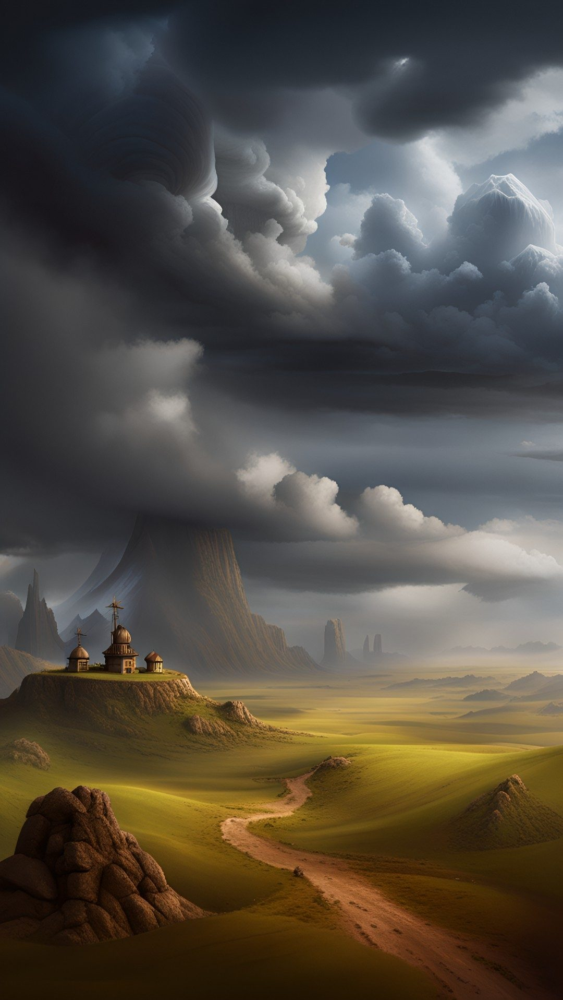
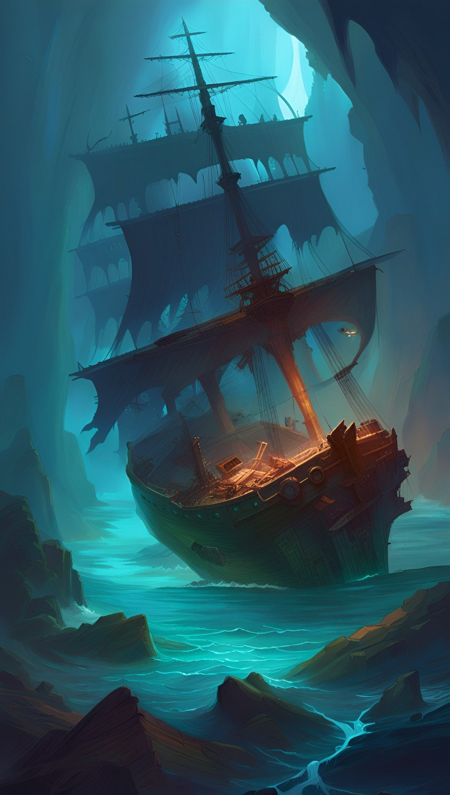

Movement


Base movement in flat terrain (plains) for every creature is covered under each encounter ("Move"). The base movement for humans is 30 kilometers per day. This includes carrying equipment/weapons/armor, resting and meal breaks and travelling 10 hours per day. The movement in combat is the base movement in meters x0.4 per round (i.e. 12 for humans).
The table below gives the movement in kilometers per day for humans. Movement for other creatures should be adjusted proportionally.
| Plains | Rough | Hills | Mountains | Woodlands | Forest | Swamp | |
|---|---|---|---|---|---|---|---|
| Walking | 30 | 25 | 25 | 15 | 25 | 20 | 10 |
| … w/trail | 30 | 30 | 25 | 20 | 30 | 30 | 15 |
| … w/road | 35 | 35 | 30 | 25 | 35 | 35 | - |
| Riding | 55 | 45 | 50 | 15 | 40 | 20 | 5 |
| … w/trail | 60 | 60 | 55 | 25 | 50 | 40 | 10 |
| … w/road | 60 | 60 | 55 | 50 | 60 | 60 | - |
| Chariot | 40 | 25 | 35 | 5 | 15 | 2 | 50¹ |
| … w/road | 55 | 55 | 50 | 45 | 55 | 55 | - |
| Wagon | 25 | 15 | 20 | 2 | 5 | 1 | 10¹ |
| … w/road | 40 | 40 | 35 | 30 | 40 | 40 | - |
¹Distance in meters per day.
For the normal movement in the table above, a person will have -1 i status after half a day of travel and -2 after the full day (10 hours of travel including breaks).
It is possible to travel longer by moving faster and spending more hours during a day. Travelling 50% longer requires 13 hours of travel time (including breaks) and will result in -2 in status after half a day and -4 after the full day. Travelling 100% longer requires 16 hours of travel and yields -3 after half a day and -6 after the full day.
One recovers 1 in status per hour of sleep.
Weather


To get randomly generated weather for a whole month, use the random weather generator for Amar.
Or, for a simpler, manual dice generator; roll on the table below for the initial weather condition.
| 1 | Heavy weather |
| 2 | Rain |
| 3 | Variable but heavily clouded |
| 4 | Cloudy |
| 5 | Variable but nice |
| 6 | Nice |
Each day, roll on the table below for changes in the weather (applied to the Weather table above). If you get a "+2" and you are already on weather condition "6", the roll bounces "off the wall" back to "4". Same if you are on weather condition "1" and get a "2" on the D6, the weather becomes a "2".
| Dice | Winter | Spring | Summer | Autumn |
|---|---|---|---|---|
| 1 | +2 | +2 | +2 | +2 |
| 2 | +1 | +1 | +1 | +1 |
| 3 | 0 | 0 | +1 | 0 |
| 4 | -1 | 0 | 0 | -1 |
| 5 | -2 | -1 | -1 | -1 |
| 6 | -3 | -2 | -2 | -2 |
Next: Encounters